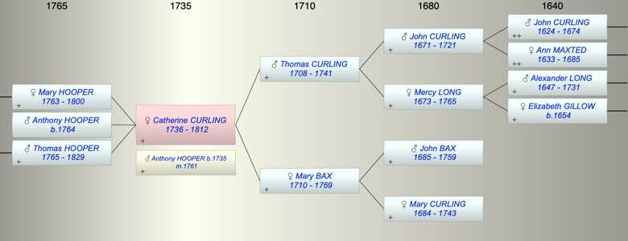

| [Index] |
| Catherine CURLING (1736 - 1812) |
|  |
| b. 1736 at St Laurence |
| m. 21 Dec 1761 Anthony HOOPER (1735 - ) at St Laurence |
| d. 19 May 1812 at St Laurence aged 76 |
| Parents: |
| Thomas CURLING (1708 - 1741) |
| Mary BAX (1710 - 1769) |
| Siblings (4): |
| George CURLING (1731 - 1739) |
| Thomas CURLING (1734 - 1735) |
| John CURLING (1739 - ) |
| Thomas CURLING (1741 - ) |
| Children (3): |
| Mary HOOPER (1763 - 1800) |
| Anthony HOOPER (1764 - ) |
| Thomas Abbott HOOPER (1765 - 1829) |
| Events in Catherine CURLING (1736 - 1812)'s life | |||||
| Date | Age | Event | Place | Notes | Src |
| 1736 | Catherine CURLING was born | St Laurence | Note 1 | ||
| 1741 | 5 | Death of father Thomas CURLING (aged 33) | |||
| 21 Dec 1761 | 25 | Married Anthony HOOPER (aged 26) | St Laurence | both single ex FMP PR | |
| 1763 | 27 | Birth of daughter Mary HOOPER | St Laurence | Note 2 | |
| 1764 | 28 | Birth of son Anthony HOOPER | St Laurence | Note 3 | |
| 1765 | 29 | Birth of son Thomas Abbott HOOPER | Note 4 | ||
| 05 Jul 1769 | 33 | Death of mother Mary BAX (aged 59) | Note 5 | ||
| 1800 | 64 | Death of daughter Mary HOOPER (aged 37) | St Laurence | Note 6 | |
| 19 May 1812 | 76 | Catherine CURLING died | St Laurence | aged 76 ex MIs | |
| Personal Notes: |
|
Katherine Curling (Hooper) downloaded from TNA PROB 11/1536 Image ref 190
Made 11 March 1812 and proved 20 Aug 1812 • Katherine Hooper of Ramsgate in the Isle of Thanet • her wearing apparel shared equally between her three grand daughters Elizabeth Mayors, Katherine Mayors and Mary Mayors, children of her deceased daughter Mary, late the wife of William Mayors, • her household linen and plate: one third to her son Anthony Hooper, one third to her son Thomas Hooper and the remaining third to her grandchildren Elizabeth Mayors, Katherine Mayors and Mary Mayors and their brother Anthony Mayors in equal shares. • her messuages lands tenements and heredits and all her household goods and furniture money securities for money chattels effects and all other her estate to her son Thomas Hooper upon Trust to sell freehold and leasehold property and distribute the proceeds and other goods as indicated in the will. • one third of the net monies in trust to her son Anthony Hooper one other third to her son Thomas Hooper for his own use and the remaining third part thereof in trust to her grandchildren Anthony Mayors, Elizabeth Mayors, Katherine Mayors and Mary Mayors in equal shares. • Her son Thomas Hooper to be sole executor Witnesses Richard Kempsley, Elizabeth Hasson and Edward Daniel According to the Kent Archaeological Society, the gravestone in the Parish Church of St. Laurence (Lawrence) in Ramsgate, Thanet, Kent (South side of Church within the path) reads as follows: Katharine HOOPER died 19th May 1812 aged 76 years. |
| Created on a Mac™ using iFamily for Mac™ on 8 Oct 2023 |